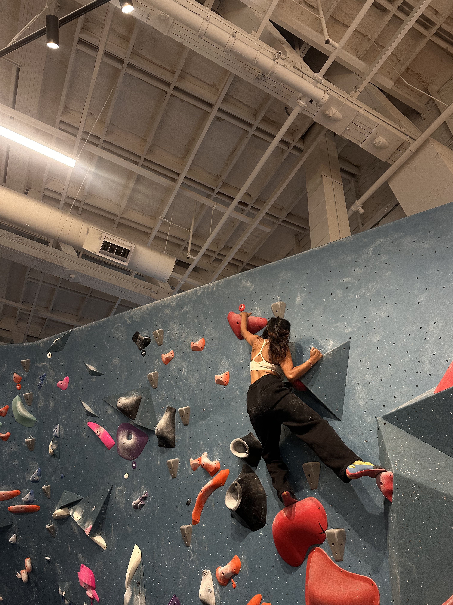
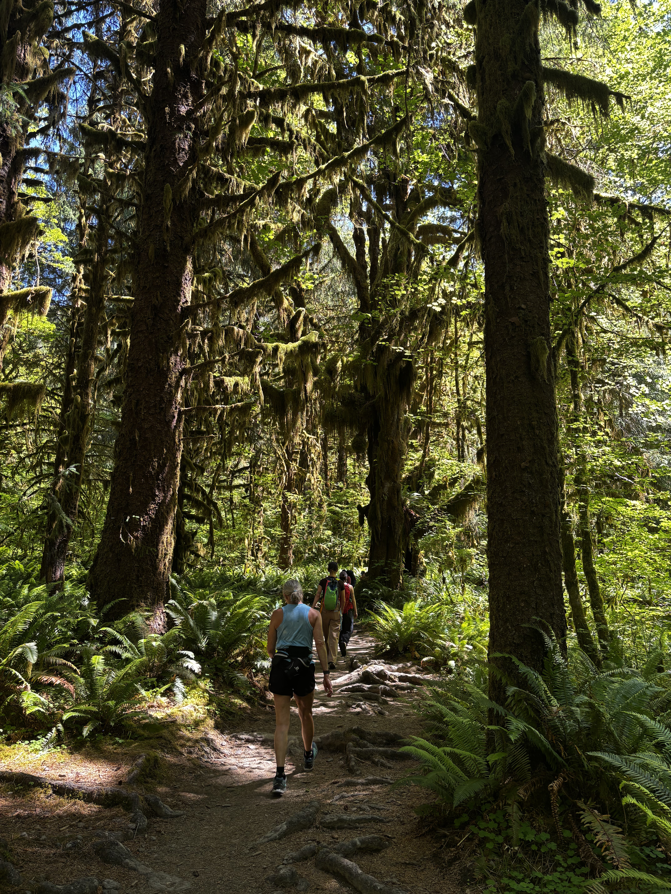

I love exploring - whether it's new ideas, places, hobbies or cuisines. In fact exploring is what got me here.
I read this quote somewhere - "Design is a way of seeing the world. It's not just a job; it's kind of a lifestyle," and I think it makes perfect sense when I think about my background. I don't come from a traditional design path, I have worked in social media, customer success, research labs as a biotechnologist and every path I have explored taught me the skills I now use daily as a designer.